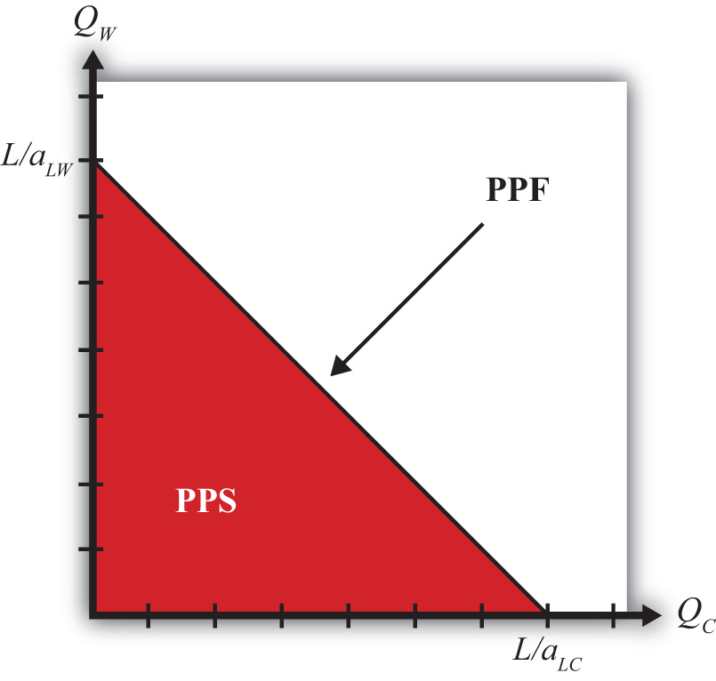

This chapter presents the first formal model of international trade: the Ricardian model. It is one of the simplest models, and still, by introducing the principle of comparative advantage, it offers some of the most compelling reasons supporting international trade. Readers will learn some of the surprising outcomes of the Ricardian model; for example, less productive nations can benefit from free trade with their more productive neighbors, and very low-wage countries are unlikely to be able to use their production cost advantage in many circumstances. Readers will also learn why so many people, even those who have studied the Ricardian theory, consistently get the results wrong.
In other words, the Ricardian model is both one of the most misunderstood and one of the most compelling models of international trade.
The first theory section of this course develops models that provide different explanations or reasons why trade takes place between countries. The five basic reasons why trade may take place are summarized below. The purpose of each model is to establish a basis for trade and then to use that model to identify the expected effects of trade on prices, profits, incomes, and individual welfare.
Advantageous trade can occur between countries if the countries differ in their technological abilities to produce goods and services. Technology refers to the techniques used to turn resources (labor, capital, land) into outputs (goods and services). The basis for trade in the Ricardian model of comparative advantage in Chapter 2 "The Ricardian Theory of Comparative Advantage" is differences in technology.
Advantageous trade can occur between countries if the countries differ in their endowments of resources. Resource endowments refer to the skills and abilities of a country’s workforce, the natural resources available within its borders (minerals, farmland, etc.), and the sophistication of its capital stock (machinery, infrastructure, communications systems). The basis for trade in both the pure exchange model in Chapter 3 "The Pure Exchange Model of Trade" and the Heckscher-Ohlin model in Chapter 5 "The Heckscher-Ohlin (Factor Proportions) Model" is differences in resource endowments.
Advantageous trade can occur between countries if demands or preferences differ between countries. Individuals in different countries may have different preferences or demands for various products. For example, the Chinese are likely to demand more rice than Americans, even if consumers face the same price. Canadians may demand more beer, the Dutch more wooden shoes, and the Japanese more fish than Americans would, even if they all faced the same prices. There is no formal trade model with demand differences, although the monopolistic competition model in Chapter 6 "Economies of Scale and International Trade" does include a demand for variety that can be based on differences in tastes between consumers.
The existence of economies of scale in production is sufficient to generate advantageous trade between two countries. Economies of scale refer to a production process in which production costs fall as the scale of production rises. This feature of production is also known as “increasing returns to scale.” Two models of trade incorporating economies of scale are presented in Chapter 6 "Economies of Scale and International Trade".
Government tax and subsidy programs alter the prices charged for goods and services. These changes can be sufficient to generate advantages in production of certain products. In these circumstances, advantageous trade may arise solely due to differences in government policies across countries. Chapter 8 "Domestic Policies and International Trade", Section 8.3 "Production Subsidies as a Reason for Trade" and Chapter 8 "Domestic Policies and International Trade", Section 8.6 "Consumption Taxes as a Reason for Trade" provide several examples in which domestic tax or subsidy policies can induce international trade.
There are very few models of trade that include all five reasons for trade simultaneously. The reason is that such a model is too complicated to work with. Economists simplify the world by choosing a model that generally contains just one reason. This does not mean that economists believe that one reason, or one model, is sufficient to explain all outcomes. Instead, one must try to understand the world by looking at what a collection of different models tells us about the same phenomenon.
For example, the Ricardian model of trade, which incorporates differences in technologies between countries, concludes that everyone benefits from trade, whereas the Heckscher-Ohlin model, which incorporates endowment differences, concludes that there will be winners and losers from trade. Change the basis for trade and you may change the outcomes from trade.
In the real world, trade takes place because of a combination of all these different reasons. Each single model provides only a glimpse of some of the effects that might arise. Consequently, we should expect that a combination of the different outcomes that are presented in different models is the true characterization of the real world. Unfortunately, because of this, understanding the complexities of the real world is still more of an art than a science.
Identify which model incorporates
The theory of comparative advantageA country has a comparative advantage when it can produce a good at a lower opportunity cost than another country; alternatively, when the relative productivities between goods compared with another country are the highest. is perhaps the most important concept in international trade theory. It is also one of the most commonly misunderstood principles. There is a popular story told among economists that once when an economics skeptic asked Paul Samuelson (a Nobel laureate in economics) to provide a meaningful and nontrivial result from the economics discipline, Samuelson quickly responded, “comparative advantage.”
The sources of the misunderstandings are easy to identify. First, the principle of comparative advantage is clearly counterintuitive. Many results from the formal model are contrary to simple logic. Second, it is easy to confuse the theory with another notion about advantageous trade, known in trade theory as the theory of absolute advantage. The logic behind absolute advantage is quite intuitive. This confusion between these two concepts leads many people to think that they understand comparative advantage when in fact what they understand is absolute advantage. Finally, the theory of comparative advantage is all too often presented only in its mathematical form. Numerical examples or diagrammatic representations are extremely useful in demonstrating the basic results and the deeper implications of the theory. However, it is also easy to see the results mathematically without ever understanding the basic intuition of the theory.
The early logic that free trade could be advantageous for countries was based on the concept of absolute advantages in production. Adam Smith wrote in The Wealth of Nations, “If a foreign country can supply us with a commodity cheaper than we ourselves can make it, better buy it of them with some part of the produce of our own industry, employed in a way in which we have some advantage” (Book IV, Section ii, 12).For more information, see Rod Hay, “Adam Smith,” McMaster University Archive for the History of Economic Thought, http://socserv.mcmaster.ca/econ/ugcm/3ll3/smith/wealth/index.html.
The idea here is simple and intuitive. If our country can produce some set of goods at a lower cost than a foreign country and if the foreign country can produce some other set of goods at a lower cost than we can produce them, then clearly it would be best for us to trade our relatively cheaper goods for their relatively cheaper goods. In this way, both countries may gain from trade.
The original idea of comparative advantage dates to the early part of the nineteenth century.For a more complete history of these ideas, see Douglas A. Irwin, Against the Tide: An Intellectual History of Free Trade (Princeton, NJ: Princeton University Press, 1996). Although the model describing the theory is commonly referred to as the “Ricardian model,” the original description of the idea (see Chapter 2 "The Ricardian Theory of Comparative Advantage", Section 2.12 "Appendix: Robert Torrens on Comparative Advantage") can be found in the 1815 Essay on the External Corn TradeSee Robert Torrens, Essay on the External Corn Trade (London: J. Hatchard, 1815). by Robert Torrens. David Ricardo formalized the idea using a compelling yet simple numerical example in his 1817 book On the Principles of Political Economy and Taxation.See David Ricardo, On the Principles of Political Economy and Taxation, McMaster University Archive for the History of Economic Thought, http://socserv2.socsci.mcmaster.ca/ ~econ/ugcm/3ll3/ricardo/prin/index.html. The idea appeared again in James Mill’s 1821 Elements of Political Economy.See James Mill, Elements of Political Economy (London: Baldwin, Cradock & Joy, 1821). Finally, the concept became a key feature of international political economy upon the 1848 publication of Principles of Political Economy by John Stuart Mill.See John Stuart Mill, Principles of Political Economy, McMaster University Archive for the History of Economic Thought, http://socserv2.socsci.mcmaster.ca/~econ/ugcm/3ll3/mill/index.html.
Because the idea of comparative advantage is not immediately intuitive, the best way of presenting it seems to be with an explicit numerical example as provided by Ricardo. Indeed, some variation of Ricardo’s example lives on in most international trade textbooks today.
In his example, Ricardo imagined two countries, England and Portugal, producing two goods, cloth and wine, using labor as the sole input in production. He assumed that the productivity of labor (i.e., the quantity of output produced per worker) varied between industries and across countries. However, instead of assuming, as Adam Smith did, that England is more productive in producing one good and Portugal is more productive in the other, Ricardo assumed that Portugal was more productive in both goods. Based on Smith’s intuition, then, it would seem that trade could not be advantageous, at least for England.
However, Ricardo demonstrated numerically that if England specialized in producing one of the two goods and if Portugal produced the other, then total world output of both goods could rise! If an appropriate terms of tradeThe amount of one good traded per unit of another in a mutually voluntary exchange. Often expressed as a ratio of prices and measured as a ratio of units; for example, pounds of cheese per gallon of wine. (i.e., amount of one good traded for another) were then chosen, both countries could end up with more of both goods after specialization and free trade than they each had before trade. This means that England may nevertheless benefit from free trade even though it is assumed to be technologically inferior to Portugal in the production of everything.
As it turned out, specialization in any good would not suffice to guarantee the improvement in world output. Only one of the goods would work. Ricardo showed that the specialization good in each country should be that good in which the country had a comparative advantage in production. To identify a country’s comparative advantage good requires a comparison of production costs across countries. However, one does not compare the monetary costs of production or even the resource costs (labor needed per unit of output) of production. Instead, one must compare the opportunity costs of producing goods across countries.
A country is said to have a comparative advantage in the production of a good (say, cloth) if it can produce it at a lower opportunity cost than another country. The opportunity cost of cloth production is defined as the amount of wine that must be given up in order to produce one more unit of cloth. Thus England would have the comparative advantage in cloth production relative to Portugal if it must give up less wine to produce another unit of cloth than the amount of wine that Portugal would have to give up to produce another unit of cloth.
All in all, this condition is rather confusing. Suffice it to say that it is quite possible, indeed likely, that although England may be less productive in producing both goods relative to Portugal, it will nonetheless have a comparative advantage in the production of one of the two goods. Indeed, there is only one circumstance in which England would not have a comparative advantage in either good, and in this case Portugal also would not have a comparative advantage in either good. In other words, either each country has the comparative advantage in one of the two goods or neither country has a comparative advantage in anything.
Another way to define comparative advantage is by comparing productivities across industries and countries. Suppose, as before, that Portugal is more productive than England in the production of both cloth and wine. If Portugal is twice as productive in cloth production relative to England but three times as productive in wine, then Portugal’s comparative advantage is in wine, the good in which its productivity advantage is greatest. Similarly, England’s comparative advantage good is cloth, the good in which its productivity disadvantage is least. This implies that to benefit from specialization and free trade, Portugal should specialize in and trade the good that it is “most better” at producing, while England should specialize in and trade the good that it is “least worse” at producing.
Note that trade based on comparative advantage does not contradict Adam Smith’s notion of advantageous trade based on absolute advantage. If, as in Smith’s example, England were more productive in cloth production and Portugal were more productive in wine, then we would say that England has an absolute advantage in cloth production, while Portugal has an absolute advantage in wine. If we calculated comparative advantages, then England would also have the comparative advantage in cloth and Portugal would have the comparative advantage in wine. In this case, gains from trade could be realized if both countries specialized in their comparative and absolute advantage goods. Advantageous trade based on comparative advantage, then, covers a larger set of circumstances while still including the case of absolute advantage and hence is a more general theory.
The modern version of the Ricardian model and its results is typically presented by constructing and analyzing an economic model of an international economy. In its most simple form, the model assumes two countries producing two goods using labor as the only factor of production. Goods are assumed to be homogeneousGoods, or production factors, that are identical and thus perfectly substitutable in consumption, or production. (i.e., identical) across firms and countries. Labor is homogeneous within a country but heterogeneous (nonidentical) across countries. Goods can be transported costlessly between countries. Labor can be reallocated costlessly between industries within a country but cannot move between countries. Labor is always fully employed. Production technology differences exist across industries and across countries and are reflected in labor productivity parameters. The labor and goods markets are assumed to be perfectly competitive in both countries. Firms are assumed to maximize profit, while consumers (workers) are assumed to maximize utility.
The primary issue in the analysis of this model is what happens when each country moves from autarkyThe situation in which a country does not trade with the rest of the world. (no trade) to free trade with the other country—in other words, what are the effects of trade? The main things we care about are trade’s effects on the prices of the goods in each country, the production levels of the goods, employment levels in each industry, the pattern of trade (who exports and who imports what), consumption levels in each country, wages and incomes, and the welfare effects both nationally and individually.
Using the model, one can show that in autarky each country will produce some of each good. Because of the technology differences, relative prices of the two goods will differ between countries. The price of each country’s comparative advantage good will be lower than the price of the same good in the other country. If one country has an absolute advantage in the production of both goods (as assumed by Ricardo), then real wages of workers (i.e., the purchasing power of wages) in that country will be higher in both industries compared to wages in the other country. In other words, workers in the technologically advanced country would enjoy a higher standard of living than in the technologically inferior country. The reason for this is that wages are based on productivity; thus in the country that is more productive, workers get higher wages.
The next step in the analysis is to assume that trade between countries is suddenly liberalized and made free. The initial differences in relative prices of the goods between countries in autarky will stimulate trade between the countries. Since the differences in prices arise directly out of differences in technology between countries, it is the differences in technology that cause trade in the model. Profit-seeking firms in each country’s comparative advantage industry would recognize that the price of their good is higher in the other country. Since transportation costs are zero, more profit can be made through export than with sales domestically. Thus each country would export the good in which it has a comparative advantage. Trade flows would increase until the price of each good is equal across countries. In the end, the price of each country’s export good (its comparative advantage good) will rise and the price of its import good (its comparative disadvantage good) will fall.
The higher price received for each country’s comparative advantage good would lead each country to specialize in that good. To accomplish this, labor would have to move from the comparative disadvantage industry into the comparative advantage industry. This means that one industry goes out of business in each country. However, because the model assumes full employment and costless mobility of labor, all these workers are immediately gainfully employed in the other industry.
One striking result here is that even when one country is technologically superior to the other in both industries, one of these industries would go out of business when opening to free trade. Thus technological superiority is not enough to guarantee continued production of a good in free trade. A country must have a comparative advantage in production of a good rather than an absolute advantage to guarantee continued production in free trade. From the perspective of a less-developed country, the developed country’s superior technology need not imply that less-developed country (LDC) industries cannot compete in international markets.
Another striking result is that the technologically superior country’s comparative advantage industry survives while the same industry disappears in the other country, even though the workers in the other country’s industry have lower wages. In other words, low wages in another country in a particular industry is not sufficient information to determine which country’s industry would perish under free trade. From the perspective of a developed country, freer trade may not result in a domestic industry’s decline just because the foreign firms pay their workers lower wages.
The movement to free trade generates an improvement in welfare in both countries individually and nationally. Specialization and trade will increase the set of consumption possibilities, compared with autarky, and will make possible an increase in consumption of both goods nationally. These aggregate gains are often described as improvements in production and consumption efficiency. Free trade raises aggregate world production efficiency because more of both goods are likely to be produced with the same number of workers. Free trade also improves aggregate consumption efficiency, which implies that consumers have a more pleasing set of choices and prices available to them.
Real wages (and incomes) of individual workers are also shown to rise in both countries. Thus every worker can consume more of both goods in free trade compared with autarky. In short, everybody benefits from free trade in both countries. In the Ricardian model, trade is truly a win-win situation.
Many people who learn about the theory of comparative advantage quickly convince themselves that its ability to describe the real world is extremely limited, if not nonexistent. Although the results follow logically from the assumptions, the assumptions are easily assailed as unrealistic. For example, the model assumes only two countries producing two goods using just one factor of production. No capital or land or other resources are needed for production. The real world, on the other hand, consists of many countries producing many goods using many factors of production. In the model, each market is assumed to be perfectly competitive when in reality there are many industries in which firms have market power. Labor productivity is assumed to be fixed when in actuality it changes over time, perhaps based on past production levels. Full employment is assumed when clearly workers cannot immediately and costlessly move to other industries. Also, all workers are assumed to be identical. This means that when a worker is moved from one industry to another, he or she is immediately as productive as every other worker who was previously employed there. Finally, the model assumes that technology differences are the only differences that exist between the countries.
With so many unrealistic assumptions, it is difficult for some people to accept the conclusions of the model with any confidence, especially when so many of the results are counterintuitive. Indeed, one of the most difficult aspects of economic analysis is how to interpret the conclusions of models. Models are, by their nature, simplifications of the real world and thus all economic models contain unrealistic assumptions. Therefore, to dismiss the results of economic analysis on the basis of unrealistic assumptions means that one must dismiss all insights contained within the entire economics discipline. Surely, this is neither practical nor realistic. Economic models in general and the Ricardian model in particular do contain insights that most likely carry over to the more complex real world. The following story is meant to explain some of the insights within the theory of comparative advantage by placing the model into a more familiar setting.
Suppose it is early spring and it is time to prepare the family backyard garden for the first planting of the year. The father in the household sets aside one Sunday afternoon to do the job but hopes to complete the job as quickly as possible. Preparation of the garden requires the following tasks. First, the soil must be turned over and broken up using the rototiller. Then the soil must be raked and smoothed. Finally, seeds must be planted, or sowed.
This year, the father’s seven-year-old son is anxious to help. The question at hand is whether the son should be allowed to help if one’s only objective is to complete the task in the shortest amount of time possible.
At first thought, the father is reluctant to accept help. Clearly each task would take the father less time to complete than it would take the son. In other words, the father can perform each task more efficiently than the seven-year-old son. The father estimates that it will take him three hours to prepare the garden if he works alone, as shown in Table 2.1 "Father’s Task Times without Son".
Table 2.1 Father’s Task Times without Son
| Task | Completion Time (Hours) |
|---|---|
| Rototilling | 1.0 |
| Raking | 1.0 |
| Planting | 1.0 |
| Total | 3.0 |
On second thought, the father decides to let his son help according to the following procedure. First, the father begins the rototilling. Once he has completed half of the garden, the son begins raking the rototilled section while the father finishes rototilling the rest of the garden plot. After the father finishes rototilling, he begins planting seeds in the section the son has already raked. Suppose that the son rakes slower than the father plants and that the father completes the sowing process just as the son finishes raking. Note this implies that raking takes the son almost two hours compared to one hour for the father. However, because the son’s work and the father’s work are done simultaneously, it does not add to the total time for the project. Under this plan, the time needed to complete the tasks is shown in Table 2.2 "Father’s Task Times with Son".
Table 2.2 Father’s Task Times with Son
| Task | Completion Time (Hours) |
|---|---|
| Rototilling | 1.0 |
| Raking and Planting | 1.0 |
| Total | 2.0 |
Notice that the total time needed to prepare the garden has fallen from three hours to two hours. The garden is prepared in less time with the son’s help than it could have been done independently by the father. In other words, it makes sense to employ the son in (garden) production even though the son is less efficient than the dad in every one of the three required tasks. Overall efficiency is enhanced when both resources (the father and son) are fully employed.
This arrangement also clearly benefits both the father and son. The father completes the task in less time and thus winds up with some additional leisure time that the father and son can enjoy together. The son also benefits because he has contributed his skills to a productive activity and will enjoy a sense of accomplishment. Thus both parties benefit from the arrangement.
However, it is important to allocate the tasks correctly between the father and the son. Suppose the father allowed his son to do the rototilling instead. In this case, the time needed for each task might look as it does in Table 2.3 "Task Times with Incorrect Specialization".
Table 2.3 Task Times with Incorrect Specialization
| Task | Completion Time (Hours) |
|---|---|
| Rototilling | 4.0 |
| Raking | 1.0 |
| Planting | 1.0 |
| Total | 6.0 |
The time needed for rototilling has now jumped to four hours because we have included the time spent traveling to and from the hospital and the time spent in the emergency room! Once the father and son return, the father must complete the remaining tasks on his own. Overall efficiency declines in this case compared with the father acting alone.
This highlights the importance of specializing in production of the task in which you have a comparative advantage. Even though the father can complete all three tasks quicker than his son, his relative advantage in rototilling greatly exceeds his advantage in raking and planting. One might say that the father is “most better” at rototilling, while he is “least better” at raking and planting. On the other hand, the son is “least worse” at raking and planting but “most worse” at rototilling. Finally, because of the sequential nature of the tasks, the son can remain fully employed only if he works on the middle task, namely, raking.
The garden story offers an intuitive explanation for the theory of comparative advantage and also provides a useful way of interpreting the model results. The usual way of stating the Ricardian model results is to say that countries will specialize in their comparative advantage good and trade it to the other country such that everyone in both countries benefits. Stated this way, it is easy to imagine how it would not hold true in the complex real world.
A better way to state the results is as follows. The Ricardian model shows that if we want to maximize total output in the world, then we should
In this way, we might raise the well-being of all individuals despite differences in relative productivities. In this description, we do not predict that a result will carry over to the complex real world. Instead, we carry the logic of comparative advantage to the real world and ask how things would have to look to achieve a certain result (maximum output and benefits). In the end, we should not say that the model of comparative advantage tells us anything about what will happen when two countries begin to trade; instead, we should say that the theory tells us some things that can happen.
Jeopardy Questions. As in the popular television game show, you are given an answer to a question and you must respond with the question. For example, if the answer is “a tax on imports,” then the correct question is “What is a tariff?”
The Ricardian model shows the possibility that an industry in a developed country could compete against an industry in a less-developed country (LDC) even though the LDC industry pays its workers much lower wages.
The modern version of the Ricardian model assumes that there are two countries producing two goods using one factor of production, usually labor. The model is a general equilibrium model in which all markets (i.e., goods and factors) are perfectly competitive. The goods produced are assumed to be homogeneous across countries and firms within an industry. Goods can be costlessly shipped between countries (i.e., there are no transportation costs). Labor is homogeneous within a country but may have different productivities across countries. This implies that the production technology is assumed to differ across countries. Labor is costlessly mobile across industries within a country but is immobile across countries. Full employment of labor is also assumed. Consumers (the laborers) are assumed to maximize utility subject to an income constraint.
Below you will find a more complete description of each assumption along with a mathematical formulation of the model.
Perfect competition in all markets means that the following conditions are assumed to hold.
The case of two countries is used to simplify the model analysis. Let one country be the United States and the other France. Note that anything related exclusively to France in the model will be marked with an asterisk. The two countries are assumed to differ only with respect to the production technology.
Two goods are produced by both countries. We assume a barter economy. This means that no money is used to make transactions. Instead, for trade to occur, goods must be traded for other goods. Thus we need at least two goods in the model. Let the two produced goods be wine and cheese.
Labor is the one factor of production used to produce each of the goods. The factor is homogeneous and can freely move between industries.
In David Ricardo’s original presentation of the model, he focused exclusively on the supply side. Only later did John Stuart Mill introduce demand into the model. Since much can be learned with Ricardo’s incomplete model, we proceed initially without formally specifying demand or utility functions. Later in the chapter we will use the aggregate utility specification to depict an equilibrium in the model.
When needed, we will assume that aggregate utility can be represented by a function of the form U = CCCW, where CC and CW are the aggregate quantities of cheese and wine consumed in the country, respectively. This function is chosen because it has properties that make it easy to depict an equilibrium. The most important feature is that the function is homothetic, which implies that the country consumes wine and cheese in the same fixed proportion at given prices regardless of income. If two countries share the same homothetic preferences, then when the countries share the same prices, as they will in free trade, they will also consume wine and cheese in the same proportion.
The Ricardian model is a general equilibrium model. This means that it describes a complete circular flow of money in exchange for goods and services. Thus the sale of goods and services generates revenue to the firms that in turn is used to pay for the factor services (wages to workers in this case) used in production. The factor income (wages) is used, in turn, to buy the goods and services produced by the firms. This generates revenue to the firms and the cycle repeats again. A “general equilibrium” arises when prices of goods, services, and factors are such as to equalize supply and demand in all markets simultaneously.
The production functions in Table 2.4 "Production of Cheese" and Table 2.5 "Production of Wine" represent industry production, not firm production. The industry consists of many small firms in light of the assumption of perfect competition.
Table 2.4 Production of Cheese
| United States | France |
|---|---|
|
where QC = quantity of cheese produced in the United States LC = amount of labor applied to cheese production in the United States aLC = unit labor requirement in cheese production in the United States (hours of labor necessary to produce one unit of cheese) ∗All starred variables are defined in the same way but refer to the process in France. |
|
Table 2.5 Production of Wine
| United States | France |
|---|---|
|
where QW = quantity of wine produced in the United States LW = amount of labor applied to wine production in the United States aLW = unit labor requirement in wine production in the United States (hours of labor necessary to produce one unit of wine) ∗All starred variables are defined in the same way but refer to the process in France. |
|
The unit labor requirementsThe quantity of labor needed to produce one unit of a good. define the technology of production in two countries. Differences in these labor costs across countries represent differences in technology.
The resource constraint in this model is also a labor constraint since labor is the only factor of production (see Table 2.6 "Labor Constraints").
Table 2.6 Labor Constraints
| United States | France |
|---|---|
| LC + LW = L | LC∗ + LW∗ = L∗ |
|
where L = the labor endowment in the United States (the total number of hours the workforce is willing to provide) |
|
When the resource constraint holds with equality, it implies that the resource is fully employed. A more general specification of the model would require only that the sum of labor applied in both industries be less than or equal to the labor endowment. However, the assumptions of the model will guarantee that production uses all available resources, and so we can use the less general specification with the equal sign.
The one factor of production, labor, is assumed to be immobile across countries. Thus labor cannot move from one country to another in search of higher wages. However, labor is assumed to be freely and costlessly mobile between industries within a country. This means that workers working in the one industry can be moved to the other industry without any cost incurred by the firms or the workers. The significance of this assumption is demonstrated in the immobile factor model in Chapter 4 "Factor Mobility and Income Redistribution".
The model assumes that goods can be transported between countries at no cost. This assumption simplifies the exposition of the model. If transport costs are included, it can be shown that the key results of the model may still be obtained.
In describing any model, it is always useful to keep track of which variables are exogenous and which are endogenous. Exogenous variablesA variable whose value is determined external to the model and whose value is known to the agents in the model. In the Ricardian model, the unit labor requirements and the labor endowment are exogenous. are those variables in a model that are determined by processes that are not described within the model itself. When describing and solving a model, exogenous variables are taken as fixed parameters whose values are known. They are variables over which the agents within the model have no control. In the Ricardian model, the parameters (L, aLC, aLW) are exogenous. The corresponding starred variables are exogenous in the other country.
Endogenous variablesA variable whose value is determined as an outcome of, or solution to, the model. In the Ricardian model, the allocation of workers to production, the quantities of the goods produced, and the terms of trade are endogenous. are those variables determined when the model is solved. Thus finding the solution to a model means solving for the values of the endogenous variables. Agents in the model can control or influence the endogenous variables through their actions. In the Ricardian model, the variables (LC, LW, QC, QW) are endogenous. Likewise, the corresponding starred variables are endogenous in the other country.
Jeopardy Questions. As in the popular television game show, you are given an answer to a question and you must respond with the question. For example, if the answer is “a tax on imports,” then the correct question is “What is a tariff?”
Using the two production functions and the labor constraint, we can describe the production possibility frontier (PPF)The set of all output combinations that could be produced in a country when all the labor inputs are fully employed. In the Ricardian model, the PPF is linear.. First, note that the production functions can be rewritten as LC = aLC QC and LW = aLW QW. Plugging these values for LC and LW into the labor constraint yields the equation for the PPF:
aLC QC + aLW QW = L.This equation has three exogenous variables (aLC, aLW, and L) that we assume have known values and two endogenous variables (QC and QW) whose values must be solved for. The PPF equation is a linear equation—that is, it describes a line. With some algebraic manipulation, we can rewrite the PPF equation into the standard form for an equation of a line, generally written as y = mx + b, where y is the variable on the vertical axis, x is the variable on the horizontal axis, m is the slope of the line, and b is the y-intercept. The PPF equation can be rewritten as
We plot the PPF on the diagram in Figure 2.1 "Production Possibilities" with QC on the horizontal axis and QW on the vertical axis. The equation is easily plotted by following three steps.
Figure 2.1 Production Possibilities
The straight downward-sloping line is the production possibility frontier. It describes all possible quantity combinations of wine and cheese that can be achieved by the U.S. economy. A movement along the curve represents a transfer of labor resources out of one industry and into another such that all labor remains employed.
Points inside the PPF are production possibilities but correspond to underemployment of labor resources. In fact, all production possibilities regardless of whether full employment is fulfilled are referred to as the production possibility set (PPS). The PPS is represented by all the points within and on the border of the red triangle in Figure 2.1 "Production Possibilities".
Jeopardy Questions. As in the popular television game show, you are given an answer to a question and you must respond with the question. For example, if the answer is “a tax on imports,” then the correct question is “What is a tariff?”
The basis for trade in the Ricardian model is differences in technology between countries. Below we define two different ways to describe technology differences. The first method, called absolute advantage, is the way most people understand technology differences. The second method, called comparative advantage, is a much more difficult concept. As a result, even those who learn about comparative advantage often will confuse it with absolute advantage. It is quite common to see misapplications of the principle of comparative advantage in newspaper and journal stories about trade. Many times authors write “comparative advantage” when in actuality they are describing absolute advantage. This misconception often leads to erroneous implications, such as a fear that technology advances in other countries will cause our country to lose its comparative advantage in everything. As will be shown, this is essentially impossible.
To define absolute advantage, it is useful to define labor productivity first. To define comparative advantage, it is useful to first define opportunity cost. Next, each of these is defined formally using the notation of the Ricardian model.
Labor productivityThe quantity of a good that can be produced per unit of labor input. It is the reciprocal of the unit labor requirement. is defined as the quantity of output that can be produced with a unit of labor. Since aLC represents hours of labor needed to produce one pound of cheese, its reciprocal, 1/aLC, represents the labor productivity of cheese production in the United States. Similarly, 1/aLW represents the labor productivity of wine production in the United States.
A country has an absolute advantageA country has an absolute advantage in the production of a good if it can produce the good at a lower labor cost and if labor productivity in the good is higher than in another country. in the production of a good relative to another country if it can produce the good at lower cost or with higher productivity. Absolute advantage compares industry productivities across countries. In this model, we would say the United States has an absolute advantage in cheese production relative to France if
or if
The first expression means that the United States uses fewer labor resources (hours of work) to produce a pound of cheese than does France. In other words, the resource cost of production is lower in the United States. The second expression means that labor productivity in cheese in the United States is greater than in France. Thus the United States generates more pounds of cheese per hour of work.
Obviously, if aLC∗ < aLC, then France has the absolute advantage in cheese. Also, if aLW < aLW∗, then the United States has the absolute advantage in wine production relative to France.
Opportunity costThe value or quantity of something that must be given up to obtain something else. In the Ricardian model, opportunity cost is the amount of a good that must be given up to produce one more unit of another good. is defined generally as the value of the next best opportunity. In the context of national production, the nation has opportunities to produce wine and cheese. If the nation wishes to produce more cheese, then because labor resources are scarce and fully employed, it is necessary to move labor out of wine production in order to increase cheese production. The loss in wine production necessary to produce more cheese represents the opportunity cost to the economy. The slope of the PPF, −(aLC/aLW), corresponds to the opportunity cost of production in the economy.
Figure 2.2 Defining Opportunity Cost

To see this more clearly, consider points A and B in Figure 2.2 "Defining Opportunity Cost". Let the horizontal distance between A and B be one pound of cheese. Label the vertical distance X. The distance X then represents the quantity of wine that must be given up to produce one additional pound of cheese when moving from point A to B. In other words, X is the opportunity cost of producing cheese.
Note also that the slope of the line between A and B is given by the formula
Thus the slope of the line between A and B is the opportunity cost, which from above is given by −(aLC/aLW). We can more clearly see why the slope of the PPF represents the opportunity cost by noting the units of this expression:
Thus the slope of the PPF expresses the number of gallons of wine that must be given up (hence the minus sign) to produce another pound of cheese. Hence it is the opportunity cost of cheese production (in terms of wine). The reciprocal of the slope, −(aLW/aLC), in turn represents the opportunity cost of wine production (in terms of cheese).
Since in the Ricardian model the PPF is linear, the opportunity cost is the same at all possible production points along the PPF. For this reason, the Ricardian model is sometimes referred to as a constant (opportunity) cost model.
A country has a comparative advantage in the production of a good if it can produce that good at a lower opportunity cost relative to another country. Thus the United States has a comparative advantage in cheese production relative to France if
This means that the United States must give up less wine to produce another pound of cheese than France must give up to produce another pound. It also means that the slope of the U.S. PPF is flatter than the slope of France’s PPF.
Starting with the inequality above, cross multiplication implies the following:
This means that France can produce wine at a lower opportunity cost than the United States. In other words, France has a comparative advantage in wine production. This also means that if the United States has a comparative advantage in one of the two goods, France must have the comparative advantage in the other good. It is not possible for one country to have the comparative advantage in both of the goods produced.
Suppose one country has an absolute advantage in the production of both goods. Even in this case, each country will have a comparative advantage in the production of one of the goods. For example, suppose aLC = 10, aLW = 2, aLC∗ = 20, and aLW∗ = 5. In this case, aLC (10) < aLC∗ (20) and aLW (2) < aLW∗ (5), so the United States has the absolute advantage in the production of both wine and cheese. However, it is also true that
so that France has the comparative advantage in cheese production relative to the United States.
Another way to describe comparative advantage is to look at the relative productivity advantages of a country. In the United States, the labor productivity in cheese is 1/10, while in France it is 1/20. This means that the U.S. productivity advantage in cheese is (1/10)/(1/20) = 2/1. Thus the United States is twice as productive as France in cheese production. In wine production, the U.S. advantage is (1/2)/(1/5) = (2.5)/1. This means the United States is two and one-half times as productive as France in wine production.
The comparative advantage good in the United States, then, is that good in which the United States enjoys the greatest productivity advantage: wine.
Also consider France’s perspective. Since the United States is two times as productive as France in cheese production, then France must be 1/2 times as productive as the United States in cheese. Similarly, France is 2/5 times as productive in wine as the United States. Since 1/2 > 2/5, France has a disadvantage in production of both goods. However, France’s disadvantage is smallest in cheese; therefore, France has a comparative advantage in cheese.
The only case in which neither country has a comparative advantage is when the opportunity costs are equal in both countries. In other words, when
then neither country has a comparative advantage. It would seem, however, that this is an unlikely occurrence.
Jeopardy Questions. As in the popular television game show, you are given an answer to a question and you must respond with the question. For example, if the answer is “a tax on imports,” then the correct question is “What is a tariff?”
Consider a Ricardian model with two countries, the United States and Ecuador, producing two goods, bananas and machines. Suppose the unit labor requirements are aLBUS= 8, aLBE = 4, aLMUS = 2, and aLME = 4. Assume the United States has 3,200 workers and Ecuador has 400 workers.
Consider a Ricardian model with two countries, England and Portugal, producing two goods, wine and corn. Suppose the unit labor requirements in wine production are aLWEng = 1/3 hour per liter and aLWPort = 1/2 hour per liter, while the unit labor requirements in corn are aLCEng = 1/4 hour per kilogram and aLCPort = 1/2 hour per kilogram.
The simplest way to demonstrate that countries can gain from trade in the Ricardian model is by use of a numerical example. This is how Ricardo presented his argument originally. The example demonstrates that both countries will gain from trade if they specialize in their comparative advantage good and trade some of it for the other good. We set up the example so that one country (the United States) has an absolute advantage in the production of both goods. Ricardo’s surprising result was that a country can gain from trade even if it is technologically inferior in producing every good. Adam Smith explained in The Wealth of Nations that trade is advantageous to both countries, but in his example each country had an absolute advantage in one of the goods. That trade could be advantageous if each country specializes in the good in which it has the technological edge is not surprising at all.
Suppose the exogenous variables in the two countries take the values in Table 2.7 "Exogenous Variable Values".
Table 2.7 Exogenous Variable Values
| United States | aLC = 1 | aLW = 2 | L = 24 |
| France | aLC∗ = 6 | aLW∗ = 3 | L∗ = 24 |
|
where L = the labor endowment in the United States (the total number of hours the workforce is willing to provide) aLC = unit labor requirement in cheese production in the United States (hours of labor necessary to produce one unit of cheese) aLW = unit labor requirement in wine production in the United States (hours of labor necessary to produce one unit of wine) ∗All starred variables are defined in the same way but refer to the process in France. |
|||
By assumption, the United States has the absolute advantage in cheese production and wine production because aLC(1) < aLC∗(6) and aLW(2) < aLW∗(3).
The United States also has the comparative advantage in cheese production because . The cost of producing cheese in the United States is one half gallon of wine per pound of cheese. In France, it is two gallons per pound.
France, however, has the comparative advantage in wine production because . The cost of producing wine in France is one half pound of cheese per gallon of wine, while in the United States, it is two pounds per gallon.
The production possibility frontiers for both countries are plotted on Figure 2.3 "Production Possibility Frontiers". Notice that the U.S. PPF lies outside France’s PPF. Since both countries are assumed to be the same size in the example, this indicates the U.S. absolute advantage in the production of both goods.
The absolute value of the slope of each PPF represents the opportunity cost of cheese production. Since the U.S. PPF is flatter than France’s, this means that the opportunity cost of cheese production is lower in the United States and thus indicates that the United States has the comparative advantage in cheese production.
Figure 2.3 Production Possibility Frontiers
With full employment of labor, production will occur at some point along the PPF.
To see the effects of specialization and free trade, we must compare it to a situation of no trade, or autarky. Thus we must construct an autarky equilibrium first. To determine the autarky production point requires some information about the consumer demand for the goods. Producers will produce whatever consumers demand at the prevailing prices such that supply of each good equals demand. In autarky, this means that the production and consumption point for a country are the same.
For the purpose of this example, we will simply make up a plausible production and consumption point under autarky. Essentially, we assume that consumer demands are such as to generate the chosen production point. Table 2.8 "Autarky Production and Consumption" shows the autarky production and consumption levels for the two countries. It also shows total world production for each of the goods.
Table 2.8 Autarky Production and Consumption
| Cheese (lbs.) | Wine (gals.) | |
|---|---|---|
| United States | 16 | 4 |
| France | 3 | 2 |
| World Total | 19 | 6 |
In Figure 2.4 "Autarky Equilibriums" we depict the autarky production and consumption points for the United States and France. Each point lies on the interior section of the country’s production possibility frontier.
Question: How do you know that the chosen production points are on the country’s PPF?
Answer: To verify that a point is on the PPF, we can simply plug the quantities into the PPF equation to see if it is satisfied. The PPF formula is aLCQC + aLWQW = L. If we plug the exogenous variables for the United States into the formula, we get QC + 2QW = 24. Plugging in the production point from Table 2.8 "Autarky Production and Consumption" yields 16 + 2(4) = 24, and since 16 + 8 = 24, the production point must lie on the PPF.
Ricardo argued that trade gains could arise if countries first specialized in their comparative advantage good and then traded with the other country. Specialization in the example means that the United States produces only cheese and no wine, while France produces only wine and no cheese. These quantities are shown in Table 2.9 "Production with Specialization in the Comparative Advantage Good". Also shown are the world totals for each of the goods.
Figure 2.4 Autarky Equilibriums

Table 2.9 Production with Specialization in the Comparative Advantage Good
| Cheese (lbs.) | Wine (gals.) | |
|---|---|---|
| United States | 24 | 0 |
| France | 0 | 8 |
| World Total | 24 | 8 |
At this point, we can already see a remarkable result. When countries specialize in their comparative advantage good, world output of both wine and cheese rises. Cheese output rises from nineteen to twenty-four pounds. Wine output rises from six to eight gallons. What’s more, the output increases occur without an increase in the quantity of labor used to produce them. In autarky, it took forty-eight worker hours to produce nineteen pounds of cheese and six gallons of wine. With specialization, the same forty-eight worker hours produce twenty-four pounds of cheese and eight gallons of wine. This means that there is an increase in world productivity—more output per unit of labor. Often this productivity improvement is referred to as an increase or improvement in world production efficiency.
The increase in world production efficiency does not benefit the countries unless they can trade with each other after specialization. Both production points were feasible under autarky, but the countries demanded some of each good. Thus the countries will want some of each good after specialization, and the only way to accomplish this is through trade. Now if the world can produce more of both goods through specialization, clearly there must be a way to divide the surplus between the two countries so that each country ends up with more of both goods after trade than it had in autarky.
The surplus in world production amounts to five extra pounds of cheese and two extra gallons of wine. To assure that trade is advantageous for the two countries, each must have at least as much to consume of one good and more to consume of the other. Suppose we split the wine surplus equally and give three extra pounds of cheese to France and two extra pounds to the United States. Since the United States consumed sixteen pounds of cheese and four gallons of wine in autarky, it would now have eighteen pounds of cheese and five gallons of wine after specialization and trade. France, which began with three pounds of cheese and two gallons of wine in autarky, would now have six pounds of cheese and three gallons of wine. Consumption and production after trade for the two countries is shown in Table 2.10 "Consumption and Production after Trade".
Table 2.10 Consumption and Production after Trade
| Country | Cheese (lbs.) | Wine (gals.) | ||
|---|---|---|---|---|
| Consumption | Production | Consumption | Production | |
| United States | 18 | 24 | 5 | 0 |
| France | 6 | 0 | 3 | 8 |
| World Total | 24 | 24 | 8 | 8 |
In order for consumption of both goods to be higher in both countries, trade must occur. In the example, the United States is consuming five gallons of wine and producing none, so it must import the five gallons from France. France is consuming six pounds of cheese with no cheese production, so it must import the six pounds from the United States. The terms of trade is TOT = 5 gals./6 lbs., or 5/6 gals./lb.
The Ricardian model numerical example assumes that countries differ in their production technologies such that one of the countries is absolutely more productive than the other in the production of each of the two goods. If these two countries specialize in their comparative advantage good, then world production rises for both goods. Increased output occurs even though there is no increase in the amount of labor input in the world; thus the example demonstrates that specialization can raise world production efficiency. Because of the increase in output, it is possible to construct a terms of trade between the countries such that each country consumes more of each good with specialization and trade than was possible under autarky. Thus both countries can gain from trade. The surprising result of this example is that a country that is technologically inferior to another in the production of all goods can nevertheless benefit from trade with that country.
A numerical example can display only one possible outcome for the model. As such, all conclusions should be viewed as possibilities rather than general results of the model. With further thought, there are some problems with the example. First, it is conceivable that with a different choice for the country’s autarky production and consumption points, world output might not rise for both goods upon specialization. In this case, we could not be sure that both countries would gain from trade. Second, since we merely made up a terms of trade that generated the interesting conclusion, we could ask whether a favorable terms of trade is likely to arise. Is it possible to make up a different terms of trade such that one country enjoys all the benefits of increased production while the other is made worse off? How can we be sure that this outcome would not arise? Finally, even if the country has more of both goods after trade, can we be sure that all consumers would have more of both goods? Perhaps some consumers would have more and others less.
The answer to some of these questions can be found by describing more carefully some of the features of the model. In particular, we must describe the relationship between prices and wages. Using these relationships, we can explain the impact of free trade on the price ratio and the effect of trade on the distribution of income.
Consider a Ricardian model with two countries, the United States and the EU, producing two goods, soap bars and toothbrushes. Suppose the productivities are aLSUS = 2 soap bars per worker, aLSE = 4 soap bars per worker, aLTUS = 8 toothbrushes per worker, and aLTE = 4 toothbrushes per worker. Assume the United States has 3,200 workers and the EU has 4,000 workers.
The Ricardian model assumes that the wine and cheese industries are both perfectly competitive. Among the assumptions of perfect competition is free entry and exit of firms in response to economic profit. If positive profits are being made in one industry, then because of perfect information, profit-seeking entrepreneurs will begin to open more firms in that industry. The entry of firms, however, raises industry supply, which forces down the product price and reduces profit for every other firm in the industry. Entry continues until economic profit is driven to zero. The same process occurs in reverse when profit is negative for firms in an industry. In this case, firms will close down one by one as they seek more profitable opportunities elsewhere. The reduction in the number of firms reduces industry supply, which raises the product’s market price and raises profit for all remaining firms in the industry. Exit continues until economic profit is raised to zero. This implies that if production occurs in an industry, be it in autarky or free trade, then economic profit must be zero.
Profit is defined as total revenue minus total cost. Let ΠC represent profit in the cheese industry. We can write this as
where PC is the price of cheese in dollars per pound, wC is the wage paid to workers in dollars per hour, PCQC is total industry revenue, and wCLC is total industry cost. By rearranging the zero-profit condition, we can write the wage as a function of everything else to get
Recall that the production function for cheese is . Plugging this in for QC above yields
or just
If production occurs in the wine industry, then profit will be zero as well. By the same algebra we can get
The Ricardian model assumes that all workers are identical, or homogeneous, in their productive capacities and that labor is freely mobile across industries. In autarky, assuming at least one consumer demands some of each good, the country will produce on the interior of its PPF. That is, it will produce some wine and some cheese.
Question: Profit-maximizing firms would never set a wage rate above the level set in the other industry. Why?
Answer: Suppose the cheese industry set a higher wage such that wC > wW. In this case, all the wine workers would want to move to the cheese industry for any wage greater than wW. Since their productivity in cheese is the same as the current cheese workers and since it does not cost anything for them to move to the other industry, the cheese industry could lower their costs and raise profit by paying a lower wage. To maximize profit, they must lower their wage. Thus only equal wage rates can be sustained between two perfectly competitive producing industries in the Ricardian model.
In autarky, then, wC = wW. Plugging in the relationships derived in the previous section yields
or
This means that the autarky price ratio (cheese over wine) or terms of trade equals the opportunity cost of producing cheese. Another way to say the same thing is that the price of cheese (in terms of wine) in autarky equals the opportunity cost of producing cheese (in terms of wine).
Question: Why is there an autarky terms of trade when there is no trade in autarky?
Answer: The Ricardian model represents a barter economy. Even though we define prices and wages in monetary terms, all relevant solutions in the model are described in terms of ratios in which the money or dollars cancel out. Never will we solve explicitly for the dollar price of wine or cheese or the dollar wage rate.
Thus a good way to think about how the model works is to imagine that workers go to work in their respective industries and produce wine or cheese. At the end of the day, they are paid not in dollars but in goods. The cheese workers’ wage is a quantity of cheese. The wine workers earn a quantity of wine. Since workers, as consumers, presumably will desire some wine and some cheese for their evening dinner, they must first go to a market to trade some of their wages (goods) for some of the other goods available at the market.
In autarky, cheese workers and wine workers come together on the domestic market to trade their goods. The autarky price ratio or terms of trade represents the amount of wine that exchanges per unit of cheese on the domestic barter market.
Use the information below to answer the following questions.
Table 2.11 Labor Productivity in Italy and Germany
| Beer | Pizza | |
|---|---|---|
| Italian Labor Productivity | 6 bottles/hour | 6 pizzas/hour |
| German Labor Productivity | 5 bottles/hour | 3 pizzas/hour |
The Ricardian model can be used to explain Adam Smith’s invisible hand. The invisible hand refers to the ability of the market, or the market mechanism, to allocate resources to their best possible uses. In the presentation of the Ricardian model it seems as if one must apply a mathematical formula (comparing opportunity costs) to identify which country has a comparative advantage and then instruct firms (perhaps by government decree) as to which goods they ought to produce.
Fortunately, none of this is necessary if the market, or the invisible hand, is allowed to operate. Instead, firms, or their owners, motivated entirely by profit, would automatically choose the appropriate good to produce and trade. In so doing, they would be led to maximize the output of goods and satisfy consumer demands to the extent possible given the limited resources in the economy. In The Wealth of Nations, Adam Smith said, “[An individual is] led by an invisible hand to promote an end which was no part of his intention.”See Book 4, Chapter 2 in Adam Smith, An Inquiry into the Nature and Causes of the Wealth of Nations, McMaster University Archive for the History of Economic Thought, http://socserv2.socsci.mcmaster.ca/~econ/ugcm/3ll3/smith/wealth/wealbk04. Emphasis mine. Maximizing society’s welfare is not the profit seeker’s intention; instead, he intends only to do what is best for himself. However, by virtue of the wonders of the market mechanism, everyone is made better off as well. Here’s how it works in this context.
Suppose two countries, the United States and France, are initially in autarky. Assume the United States has a comparative advantage in cheese production relative to France. This implies
This, in turn, implies
This means that the autarky price of cheese in France (in terms of wine) is greater than the autarky price of cheese in the United States. In other words, you can buy more wine with a pound of cheese in the French market than you can in the U.S. market.
Similarly, by rearranging the above inequality,
which means that the autarky price of wine is higher in the United States (in terms of cheese) than it is in France. In other words, a gallon of wine can be exchanged for more cheese in the United States than it will yield in the French market.
Next, suppose the barriers to trade that induced autarky are suddenly lifted and the United States and France are allowed to trade freely. For simplicity, we assume there are no transportation costs to move the products across borders.
Differences in price ratios between countries and the desire to make more profit are sufficient to generate international trade. To explain why, it is useful to incorporate some friction in the trading process and to tell a dynamic story about how a new free trade equilibrium is reached.
First, note that the higher price of cheese in France means that cheese workers in the United States could get more wine for their cheese in France than in the United States. Suppose one by one over time cheese workers begin to take advantage of the opportunity for trade and begin to sell their cheese in the French market. We assume that some workers are more internationally adroit and thus move first. The motivation here is profit. Workers want to get more for the goods they are selling. As the U.S. cheese workers appear in the French market, the supply of cheese increases. This also represents exports of cheese from the United States to France. The increased supply will reduce the price of cheese in the French market, meaning that over time, the quantity of wine obtained for a pound of cheese will fall. Thus PC∗/PW∗ falls once trade is opened.
Next, consider French wine workers immediately after trade opens. Since the price of wine is higher in the United States, French wine workers will one by one over time begin to sell their wine in the U.S. market. This represents exports of wine from France to the United States. The increased supply of wine to the United States lowers its price on the U.S. market. Thus each gallon of wine will trade for less and less cheese. This means PW/PC falls, which also means that its reciprocal, PC/PW, rises.
These shifts in supply will continue as long as the prices for the goods continue to differ between the two markets. Once the prices are equalized, there will be no incentive to trade any additional amount. Equalized prices mean that a pound of cheese will trade for the same number of gallons of wine in both markets. The free trade prices will be those prices that equalize total supply of each good in the world with total demand for each good.
As a result of trade, the price ratio, or terms of trade, will lie in between the two countries’ autarky price ratios. In other words, the following inequality will result:
Whether the free trade price ratio will be closer to the U.S. or France’s autarky price ratio will depend on the relative demands of cheese to wine in the two countries. These demands in turn will depend on the size of the countries. If the United States is a much larger country, in that it has a larger workforce, it will have a larger demand for both wine and cheese. When trade opens, the addition of France’s supply and demand will have a relatively small effect on the U.S. price. Thus the free trade price ratio will be closer to the U.S. autarky price ratio.
Once the prices begin to change because of trade, they will also affect the profitability of producing the two goods. In the United States, the price of cheese, its export good, will rise in moving to trade, while the price of wine, its import good, will fall. As shown above, the final price ratio in the United States (cheese to wine) in free trade will be greater than the autarky price ratio, so that
Because the autarky price ratio equals the opportunity cost of cheese production, it follows that
Note that this inequality will be true as soon as the price deviates from the autarky price and long before the free trade prices are reached. This also means that shortly after trade begins, the price of cheese (measured in terms of wine) exceeds the cost of producing cheese (also measured in terms of wine). Normally, when we measure the price and cost in dollar terms, when the price per unit exceeds the cost per unit, then positive profit is realized. The same is true when we measure the price and cost in terms of wine. Thus as soon as trade begins to change prices, cheese production becomes more profitable in the United States. And because we assume people are profit seeking, they will therefore seek to expand cheese production. But where will they find the workers to do so? There is only one place: wine workers. To expand cheese production, the country will have to give up wine production. But why do that?
Well, when the price of cheese in terms of wine exceeds the opportunity cost of cheese, it is also true, via cross multiplication, that
This means that the cost of producing wine (in terms of cheese) exceeds the price of wine (also in terms of cheese). Because cost is greater than price, profit is negative in the wine industry in the United States. That means wine producers have an incentive to shut down. And when they do, those workers can be moved into the cheese industry, where profit seekers wish to expand.
Thus, as long as individuals are profit seeking, the price differences that arise in autarky will be sufficient to induce export and specialization in the comparative advantage good. There is no need to use the complicated opportunity cost formula to first identify the comparative advantage good and no need to tell anyone what to do. Instead, the free market mechanism—Adam Smith’s invisible hand—is all that it takes.
Suppose Canada and Brazil are defined by a Ricardian model and have exogenous variables with the values below.
Table 2.12 Exogenous Variable Values
| Canada | aLC = 10 | aLW = 20 | L = 24 |
| Brazil | aLC∗ = 5 | aLW∗ = 15 | L∗ = 24 |
|
where L = the labor endowment in Canada (the total number of hours the workforce is willing to provide) aLC = unit labor requirement in cheese production in Canada (hours of labor necessary to produce one unit of cheese) aLW = unit labor requirement in wine production in Canada (hours of labor necessary to produce one unit of wine) ∗All starred variables are defined in the same way but refer to the process in Brazil. |
|||
There are two ways to evaluate the welfare effects of trade in the Ricardian model. The first method evaluates the real wages of workers as two countries move from autarky to free trade. It is shown that the purchasing power of all workers’ wages in both countries would rise in moving to free trade.
The focus on real wages allows us to see the effect of free trade on individual consumers in the economy. Nominal wages are not sufficient to tell us if workers gain since, even if wages rise, the price of one of the goods also rises when moving to free trade. If the price rises by a greater percentage than the wage, the ability to purchase that good falls and the worker may be worse off.
For this reason, we must consider real wages. The real wageThe quantity of a good that can be purchased per unit of work. Real wage is a measure of the purchasing power of a wage and is an effective measure of well-being. represents the purchasing power of wages—that is, the quantity of goods the wages will purchase. Real wages are typically measured by dividing nominal wages by a price index. The price index measures the average level of prices relative to a base year. The nominal wage is the amount of dollars the worker receives.
In this model, we need not construct a price index since there are only two goods. Instead, we will look at the real wage of workers in terms of the purchasing power of each good. In other words, we will solve for a real wage in terms of purchases of both wine and cheese.
Consider the real wage of a worker in terms of cheese. Suppose the worker earns $10 per hour and the price of cheese is $5 per pound. The real wage can be found by dividing the wage by the price to get
This means the worker can buy two pounds of cheese with every hour of work.
The real wage of cheese workers in terms of cheese is the quantity of cheese that a cheese worker can buy with a unit of work. It is calculated by dividing the worker’s wage by the price of cheese, written as . Since zero profit results in each producing industry, we can simply rewrite the relationship derived above to construct the following formula for the real wage:
This means that the real wage of a worker in terms of how much cheese can be purchased is equal to labor productivity in cheese production. In other words, the amount of cheese that a worker can buy per period of work is exactly the same as the amount of cheese the worker can make in that same period.
The real wage of cheese workers in terms of wine is the quantity of wine that a cheese worker can buy with a unit of work. It is calculated by dividing the cheese worker’s wage by the price of wine and is written as . Using the relationship between wages and prices when zero profit results in the cheese industry implies that
This means that the real wage of cheese workers in terms of wine is the product of labor productivity in the cheese industry and the price ratio. Labor productivity gives the quantity of cheese a cheese worker makes in an hour of work. The price ratio gives the quantity of wine that exchanges for each unit of cheese. The product gives the quantity of wine that a cheese worker can buy with a unit of work. To calculate the autarky real wage, simply plug in the autarky price ratio. To calculate the free trade real wage, plug in the free trade price ratio.
The real wage of wine workers in terms of wine is the quantity of wine that a wine worker can buy with a unit of work. It is calculated by dividing the worker’s wage by the price of wine, written as wW/PW. Since zero profit results in each producing industry, we can rewrite the relationship to get
As with cheese, the real wage of a worker in terms of how much wine can be purchased is equal to labor productivity in wine production. In other words, the amount of wine that a worker can buy per period of work is exactly the same as the amount of wine the worker can make in that same period.
The real wage of wine workers in terms of cheese is the quantity of cheese that a wine worker can buy with a unit of work. It is calculated by dividing the wine worker’s wage by the price of cheese, written as (wW/PC). Using the relationship between prices and wages when zero profit results in the wine industry implies that
This means that the real wage of wine workers in terms of cheese is the product of labor productivity in the wine industry and the price ratio. Labor productivity gives the quantity of wine a wine worker makes in an hour of work. The price ratio gives the quantity of cheese that exchanges for each unit of wine. The product gives the quantity of cheese that a wine worker can buy with a unit of work. To solve for the autarky real wage, simply plug in the autarky price ratio. To find the free trade real wage, plug in the free trade price ratio.
To calculate autarky real wages, we simply plug the autarky price ratio into the real wage formulae.
Recall that the autarky price ratio is . Plugging this in and simplifying yields the results in Table 2.13 "Autarky Real Wages".
Table 2.13 Autarky Real Wages
| In Terms of Cheese | In Terms of Wine | |
|---|---|---|
| Real Wage of Cheese Workers | ||
| Real Wage of Wine Workers | ||
|
where PC = price of cheese PW = price of wine wC = wage paid to cheese workers wW = wage paid to wine workers aLC = unit labor requirement in cheese production in the United States (hours of labor necessary to produce one unit of cheese) aLW = unit labor requirement in wine production in the United States (hours of labor necessary to produce one unit of wine) |
||
Notice that in autarky, the real wage of cheese workers is exactly the same as the real wage of wine workers with respect to purchases of both goods. This occurs because labor is assumed to be homogeneous—that is, all labor is the same—and because there is free mobility between industries. (If workers were paid different wages, the lower-wage workers would move to the higher-wage industry.)
Suppose the United States has an absolute advantage in the production of both goods. In this case, and . This implies that the real wages of workers in both industries in the United States are higher than the real wages in France. Put another way, workers in France earn lower wages in both industries.
Sometimes cross-country wage comparisons are made and it is suggested that firms in a high-wage country cannot compete with firms in low-wage countries. However, wage comparisons of this kind are not sufficient in this model to determine who will produce what or whether trade can be advantageous. Instead, what matters is relative wage comparisons. In this model, a country will tend to specialize in the good in which it has the greatest real wage advantage. Thus if
then the United States has relatively higher real wages with respect to cheese purchases than it does in wine purchases. When trade opens, the United States will specialize in its comparative advantage good, which, by rearranging the above inequality, can easily be shown to be cheese.
Suppose two countries, the United States and France, move from autarky to free trade. If the United States has the comparative advantage in cheese production, then , which implies . When the two countries move to free trade, the free trade price ratio will lie somewhere between the autarky price ratios. This means that (PC/PW) rises in the United States when moving from autarky to free trade, while PC∗/PW∗ falls when moving to free trade.
The other major change that occurs is that the United States specializes in cheese production, while France specializes in wine production. This means that real wages in free trade for wine workers in the United States need not be calculated since the United States will no longer have any wine workers. Similarly, real wages for cheese workers in France need not be calculated.
Thus we can calculate the changes in real wages shown in Table 2.14 "Changes in Real Wages (Autarky to Free Trade)".
Table 2.14 Changes in Real Wages (Autarky to Free Trade)
| In Terms of Cheese | In Terms of Wine | |
|---|---|---|
| Real Wage of U.S. Cheese Workers | (no change) | (rises) |
| Real Wage of French Wine Workers | (rises) | (no change) |
First, consider the fate of U.S. cheese workers. Since the unit labor requirement for cheese does not change in moving to free trade, there is also no change in the real wage in terms of cheese. However, since the price of cheese in terms of wine rises, U.S. cheese workers can get more wine for each unit of cheese in exchange. Thus the real wage of cheese workers in terms of wine rises. This means cheese workers are at least as well off in free trade as they were in autarky.
The worst outcome occurs if a cheese worker has no demand for wine. Perhaps an individual abstains from alcohol consumption. In this case, the worker would be able to buy just as much cheese in free trade as in autarky, but no more. Such a person would receive no benefit from free trade. However, every worker who demands both wine and cheese will be able to buy more of both goods.
As for the workers who worked in the wine industry in the United States in autarky, they are now cheesemakers earning cheesemaker wages. Since real wages for wine workers were the same as wages for cheese workers in autarky, and since cheese workers are no worse off with free trade, then wine workers must also be no worse off in free trade. Of course, the model assumes that the movement of workers from one industry to another is costless. In the immobile factor model, we address the implications of adjustment costs across industries.
In France, the real wage of winemakers in terms of how much wine they can buy remains constant, while the real wage in terms of cheese must go up. French cheesemakers have all become winemakers because of specialization, which means all French workers are no worse off and most likely better off as a result of free trade.
The likely welfare effect of free trade, then, is that everyone in both trading countries benefits. At the very worst, some individuals will be just as well off as in autarky. This result occurs for any free trade price ratio that lies between the autarky price ratios.
In David Ricardo’s original numerical example, he demonstrated that when both countries specialize in their comparative advantage goods and engage in free trade, both countries can experience gains from trade. However, his demonstration was only true for particular numerical values. By calculating real wage changes, it is shown that it doesn’t matter which price ratio emerges in free trade as long as it is between the autarky prices. Also, because all workers receive the same wage in each country, the real wage calculations tell us that everyone benefits equally in each country.
Consider a Ricardian model. Suppose the U.S. unit labor requirement for timber is three, its unit labor requirement for videocassette recorders (VCRs) is eight, and it has forty-eight million workers. Suppose Taiwan’s unit labor requirement for timber is six, its unit labor requirement for VCRs is two, and it has forty-eight million workers.
The second and more traditional method to evaluate the effects of free trade uses an aggregate welfare function to depict the overall welfare effects that would accrue to the nation. This method allows one to demonstrate the benefits that arise from increased production and consumption efficiency.
Figure 2.5 "Comparing Autarky and Free Trade Equilbriums" compares autarky and free trade equilibriums for the United States and France. The U.S. PPF is given by the red line, while France’s PPF is given by the green line. We assume both countries share the same aggregate preferences represented by the indifference curves in the diagram. Note also that if the United States and France had the same size labor force, then the relative positions of the PPFs imply that the United States has the absolute advantage in cheese production, while France has the absolute advantage in wine production. Also, if each country has an absolute advantage in one of the two goods, then each country must also have the comparative advantage in that good.
Figure 2.5 Comparing Autarky and Free Trade Equilbriums

The U.S. autarky production and consumption points are determined where the aggregate indifference curve is tangent to the U.S. PPF. This occurs at the red point A. The United States realizes a level of aggregate utility that corresponds to the indifference curve IAut.
The U.S. production and consumption points in free trade are at the red P and C, respectively. The United States specializes in production of its comparative advantage good but trades to achieve its consumption point at the red C. In free trade, the United States realizes a level of aggregate utility that corresponds to the indifference curve IFT. Since the free trade indifference curve IFT lies to the northeast of the autarky indifference curve IAut, national welfare rises as the United States moves to free trade.
France’s autarky production and consumption points are determined by finding the aggregate indifference curve that is tangent to the French PPF. This occurs at the green point A∗. France realizes a level of aggregate utility that corresponds to the indifference curve IAut∗.
French production and consumption points in free trade are the green P∗ and C∗, respectively. In free trade, France realizes a level of aggregate utility that corresponds to the indifference curve IFT∗. Since the free trade indifference curve IFT∗ lies to the northeast of the autarky indifference curve IAut∗, national welfare rises as France moves to free trade.
The first known statement of the principle of comparative advantage and trade appears in an article by Robert Torrens in 1815 titled Essay on the External Corn Trade. Torrens begins by describing the basic idea of absolute advantage as described by Adam Smith but goes on to suggest that the simple intuition is erroneous. He wrote,
Suppose that there are in England, unreclaimed districts, from which corn might be raised at as small an expense of labor and capital, as from the fertile plains of Poland. This being the case, and all other things the same, the person who should cultivate our unreclaimed districts, could afford to sell his produce at as cheap a rate as the cultivator of Poland: and it seems natural to conclude, that if industry were left to take its most profitable direction, capital would be employed in raising corn at home, rather than bringing it in from Poland at an equal prime cost, and at much greater expense of carriage. But this conclusion, however obvious and natural it may, at first sight, appear, might, on closer examination, be found entirely erroneous. If England should have acquired such a degree of skill in manufactures, that, with any given portion of her capital, she could prepare a quantity of cloth, for which the Polish cultivator would give a greater quantity of corn, then she could, with the same portion of capital, raise from her own soil, then, tracts of her territory, though they should be equal, nay, even though they should be superior, to the lands in Poland, will be neglected; and a part of her supply of corn will be imported from that country.
In the first part of the passage, Torrens considers a case in which the cost of producing corn, in terms of labor and capital usage, is the same in England as it is in Poland. He points out that producers could afford to sell both English and Polish corn at the same low price. However, since it would cost additional resources to transport the corn from Poland to England (expense of carriage), it makes intuitive sense that corn should be produced in England, rather than imported, since Polish corn would wind up with a higher price than English corn in the English market.
He continues by suggesting that this conclusion is erroneous. Why? Suppose England were to remove some capital (and labor) from the production of corn and move it into the production of manufactured goods. Suppose further that England trades this newly produced quantity of manufactured goods for corn with Poland. This outcome would be better for England if the amount of corn that Poland is willing to trade for the manufactured goods is greater than the amount of corn that England has given up producing. If the excess corn that Poland is willing to trade is sufficiently large, then it may be more than enough to pay for the transportation costs between the two countries. Torrens’s final point is that this trading outcome may be superior for England even if the lands of England should be superior to the lands of Poland—in other words, even if corn can be more efficiently produced in England (i.e., at lower cost) than in Poland.
This is the first explicit description of one of the major results from the theory of comparative advantage. It reflects Torrens’s understanding that a country might conceivably benefit from free trade while reducing or eliminating production of a good it is technologically superior at producing.